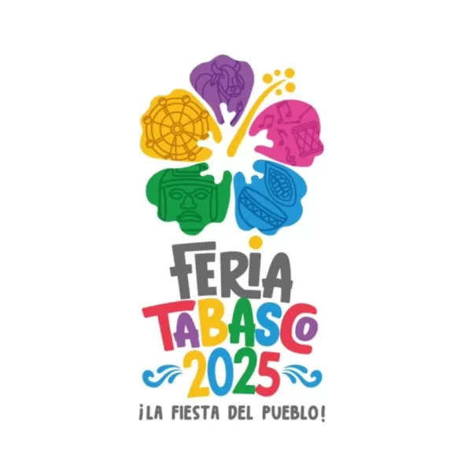

La Flor Tabasco es un título simbólico otorgado a una de las 17 jóvenes embajadoras que representan a cada uno de los municipios del estado durante la Feria Tabasco, la festividad más importante de la región. Este certamen, que forma parte de la tradición cultural tabasqueña, no busca premiar la belleza física, sino reconocer a la joven que mejor encarne la identidad, valores y tradiciones de su municipio.
La elección de la Flor Tabasco se lleva a cabo en el marco de la preferia, una serie de actividades previas a la feria principal. Durante este proceso, las embajadoras participan en eventos como la presentación a medios de comunicación, el desfile de modas y la imposición de bandas. La ganadora del título se convierte en una figura representativa del estado, promoviendo la cultura y las tradiciones de Tabasco durante el año siguiente.
IMPORTANCIA DEL EVENTO

Celebración de la identidad cultural:
La elección de la Flor Tabasco es una manifestación de la rica diversidad cultural del estado. Cada embajadora presenta trajes típicos, danzas y costumbres que reflejan la herencia única de su municipio.
Fomento del orgullo y la unidad:
Este evento promueve el sentido de pertenencia y orgullo entre los tabasqueños, al destacar las características distintivas de cada región y fortalecer los lazos entre las comunidades.
Impulso al turismo y la economía local:
La elección atrae a numerosos visitantes, tanto locales como foráneos, lo que genera una derrama económica significativa para el estado. Además, brinda una plataforma para que las embajadoras promuevan los atractivos turísticos de sus municipios.
Empoderamiento de la mujer:
Más allá de la belleza, el certamen valora la inteligencia, el conocimiento y el compromiso social de las participantes, brindándoles una oportunidad para destacarse y convertirse en líderes y embajadoras culturales.